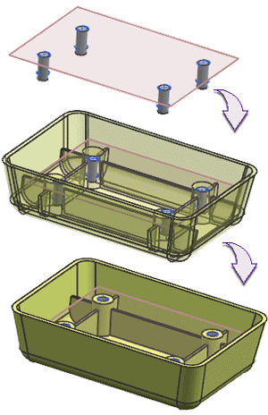

Estimated time to complete: 4–7 minutes
In this activity, you will create 4 positive threaded holes and then move them to their ultimate location and subtract them from the main object.

Open the Create and use positive holes activity.